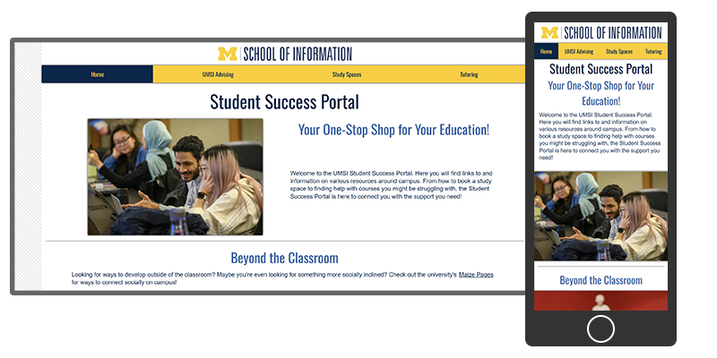

About Me
Hello! Welcome to my portfolio. My name is Carter, a student at the University of Michigan School of Information. Currently, I'm pursuing a degree in UX Research and Design, and I have a Bachelor's in Cognitive Science from the University of Michigan as well.
While my current focus is on UX and front-end development, a majority of my prior knowledge and experience is in working with programming languages such as Python and C++. I feel the interdisciplinary nature of my studies combined with my technical background gives me a unique perspective on design and problem solving.
Projects
A website I made which serves as a hub for the School of Information's resources while following the University of Michigan's branding guidelines.
More on the way!
A Coffee Tutorial
One of my main passions in life is coffee-making. As a fun little addition to my portfolio, I figured I would share this passion with you via a video from one of my favorite online content creators! Don't worry about writing anything down; I've got you covered.
Note that this technique is for a v60 brewer with a ratio of 3 grams of coffee to 50 grams of water.
- Boil your water to about 100 degrees celsius
- Grind your coffee beans
- Pre-heat your v60 and rinse your filter paper
- Pour your grinds into the v60 and make a small hole in the middle
- Pour up to 50 grams, or 20% of your total water, onto the grinds to begin the blooming process, swirling once finished
- Let the coffee grounds bloom for about 45 seconds
- Pour in another 50 grams, or another 20%, making gentle circles with the water as you pour
- Pause for about 10 seconds
- Repeat this process until all 250 grams of water are used
- Give the brewer a gentle swirl and allow the coffee to draw down completely